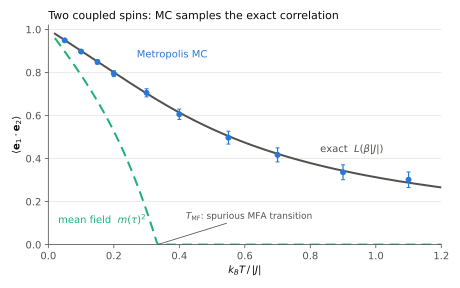
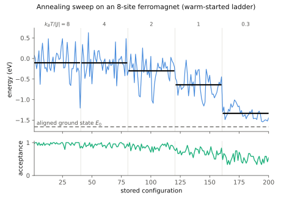
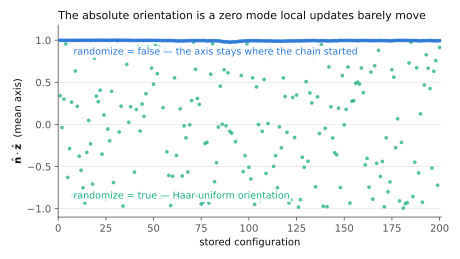

Monte-Carlo sampling
MetropolisSampler is the joint-Boltzmann sibling of the mean-field MFASampler: single-spin Metropolis on the fitted SLCE Hamiltonian over its training cell, so the drawn configurations carry the model's true inter-site correlations. The price is a Markov chain — burn-in, thinning, and an acceptance rate to watch — instead of closed-form single-site draws.

Two exchange-coupled spins (the test suite's dimer): the MC estimate sits on the exact ⟨e₁·e₂⟩ = L(β|J|) at every temperature, while the single-site mean field factorizes the correlation into m² and produces a spurious sharp transition at T_MF — the correlation the MC sampler exists to keep.
Construction and the sample verb
mc = MetropolisSampler(model) # model::SLCEModel
mc = MetropolisSampler(model; reference) # reference = default chain start
# n configurations at one absolute temperature — in kelvin, or as k_B·T in eV
samp = sample(mc, 200; temperature = 300, rng = MersenneTwister(1))
samp = sample(mc, 200; kT = 0.02, rng = MersenneTwister(1))
# an annealing sweep: the chain warm-starts each next temperature
samp = sample(mc; temperature = [1200, 900, 600, 300], nsamples = 50)Unlike the mean-field sampler there is no reduced temperature — the control is absolute, under exactly one of two keywords (so a kelvin value can never be silently read as an energy):
temperature— kelvin, converted internally withSLCETools.KB_EV($k_B = 8.617 \times 10^{-5}$ eV/K). This assumes the model's energy unit is eV — the package-wide convention for DFT-fitted models.kT— $k_B T$ directly in the model's energy units. Use this for theoretical runs in coupling units (kT = 2 * abs(J)), for the test suite, or for a non-eV model.
Absolute control works for any body order — including models without a bilinear ($l=1$) channel, where $T_{\mathrm{MF}}$ is not even defined. To compare against mean-field results at reduced $\tau$, convert with kT = τ * mfa_temperature_scale(mfa_sampler).
In the collection form the chain state carries over between consecutive temperatures (with a fresh burn-in at each), so ordering high → low is an annealing run — useful for reaching low-temperature order from a random start. Call once per temperature for independent chains.

A warm-started ladder on a small ferromagnet, from a random start: within each temperature block the energy fluctuates about its equilibrium level (black: block mean), stepping toward the aligned ground state E₀ as the ladder cools; the acceptance rate (bottom) falls with temperature — the signal for lowering step.
| Keyword | Meaning |
|---|---|
burnin | equilibration sweeps before the first stored configuration (default 200) |
thin | sweeps between stored configurations (default 10) |
step | proposal rotation angle scale, radians (default 0.6) |
rng | an AbstractRNG for reproducibility |
init | chain start: a 3 × n_atoms matrix ▸ the sampler's reference ▸ random |
randomize | one uniform random global rotation per stored configuration |
One sweep is n_atoms single-spin attempts; each attempt contracts the fitted terms against the current neighbor harmonics, so the acceptance uses the exact energy change of the move (any body order, no linearization).
Every keyword, spelled out
The single-temperature form — production sampling at one physical temperature, e.g. generating anisotropy training configurations from an isotropic fit:
using SLCETools, Random, Statistics
reference = ... # 3 × n_atoms unit columns (the ground state)
mc = MetropolisSampler(model; reference = reference)
samp = sample(mc, 500; # store 500 configurations, then stop
temperature = 300, # 300 K — or kT = 0.0259 [eV]; exactly one
burnin = 500, # sweeps discarded first (equilibration);
# more when starting far from equilibrium
thin = 20, # sweeps between stored configs; raise it
# if successive configs still look alike
step = 0.3, # proposal angle [rad]; lower at low T to
# keep the acceptance in the healthy band
rng = MersenneTwister(1), # seeded ⇒ byte-reproducible run
init = nothing, # nothing → the sampler's reference here;
# pass a 3 × n_atoms matrix to override
randomize = true) # Haar-rotate each *stored* copy: uniform
# orientation; isotropic ⇒ still Boltzmann
# always look at the diagnostics before trusting the configs:
mean(samp.acceptance) # aim for ~0.2–0.6; too low → reduce `step`
samp.energy # trend-free? a drift = `burnin` too shortThe sweep form — an annealing ladder from a random start down to the target temperature (one call, the chain warm-starts each next value):
mc_hot = MetropolisSampler(model) # no reference → chains start random
samp = sample(mc_hot;
temperature = [1200, 900, 600, 300], # kelvin ladder, high → low = annealing
# (or kT = [...] in eV — never both)
nsamples = 100, # stored configs *per* temperature
# (4 × 100 total, ordered value-outer)
burnin = 300, # re-equilibration after *each* T step
thin = 10,
step = 0.6,
rng = MersenneTwister(2),
init = nothing, # no reference on mc_hot → random start
# (hot — matches the 1200 K ladder head)
randomize = false) # fixed frame, e.g. to watch the ordering
# axis develop during the anneal
# pick out one temperature block by its label (≈, not ==: .temperature is the
# derived kT/KB_EV round-trip, so exact float equality is not guaranteed):
configs_300K = [c for (c, T) in zip(samp.configs, samp.temperature) if T ≈ 300]The MCSample output
MCSample mirrors the MFASample interface (iterate / index as the configurations) with MC-native labels:
| Field | Contents |
|---|---|
.configs | Vector of 3 × n_atoms configurations (unit columns) |
.kT | each configuration's $k_B T$ in the model's energy units |
.temperature | the same in kelvin (= kT / SLCETools.KB_EV; assumes an eV model) |
.energy | that configuration's SLCE energy (model units, j0 excluded) |
.acceptance | Metropolis accept fraction over the sweeps that produced it |
Use .energy to check equilibration (the trace should be trend-free within one temperature) and .acceptance to tune step: aim for roughly 0.2–0.6, lowering step at low temperature. The first configuration at each temperature includes its burn-in window in the acceptance denominator.
randomize and anisotropy training data
Local single-spin updates diffuse the configuration's absolute orientation very slowly (for an isotropic model it is an exact zero mode), so a chain started along $+z$ stays near $+z$ for a long time even when the physics says all orientations are equivalent. randomize = true applies one Haar-uniform global rotation to each stored copy (the chain itself is untouched):

A 64-site ferromagnet at low temperature, started along +z: over the whole run the chain's mean axis barely leaves ẑ (blue), while the randomized stored copies cover all orientations uniformly (green) — two same-seed runs differing only in randomize.
- isotropic model — the rotated configurations are still exact Boltzmann samples (the energy is invariant;
.energyis recomputed on the stored copy and machine-equal), with the absolute orientation now exactly uniform. This is the right way to generate training data for a later anisotropic fit: the spin structure gets presented to the crystal axes in all orientations. - anisotropic model — the rotation changes the energy, so the result is data augmentation, not an equilibrium sample of that model.
.energystill matches the stored (rotated) configuration.
When to use which sampler
MFASampler | MetropolisSampler | |
|---|---|---|
| distribution | single-site mean field (no correlations) | joint Boltzmann (correlated) |
| control | reduced $\tau = T/T_{\mathrm{MF}}$ (or m) | absolute: temperature [K] / kT [energy] |
| cost | closed form / short per-site chains | lattice Markov chain |
| smooth per-atom distribution $P(\boldsymbol e_a)$ | yes (coefficients) | histogram only |
| needs an $l=1$ channel | yes (sets $T_{\mathrm{MF}}$) | no |
Cheap sweeps, smooth per-atom distributions, and $\tau$-controlled proposals → mean field. Realistic correlated configurations at a physical temperature → Metropolis.